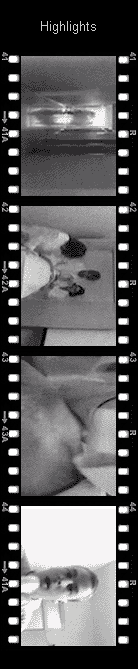

Antidrug Public Message is a 30 seconds TV commercial produced in Nicosia, Cyprus as a project for advertisement class.
Click here to download the clip

May 3, 1999
Antidrug Public Message is a 30 seconds TV commercial produced in Nicosia, Cyprus as a project for advertisement class.
Click here to download the clip
